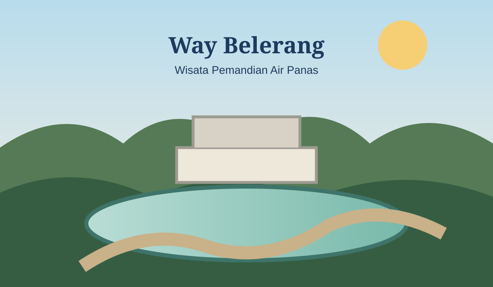

WISATA ALAM
Destinasi Pilihan
Wisata Way Belerang
Way Belerang dikenal sebagai kawasan pemandian air panas di Kalianda. Pemerintah Kabupaten Lampung Selatan juga memuat informasi mengenai Pemandian Air Panas Way Belerang sebagai salah satu tempat wisata di wilayah tersebut.
◎LokasiKalianda, Lampung Selatan
♨Daya TarikPemandian air panas & suasana alam